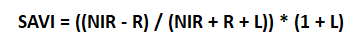
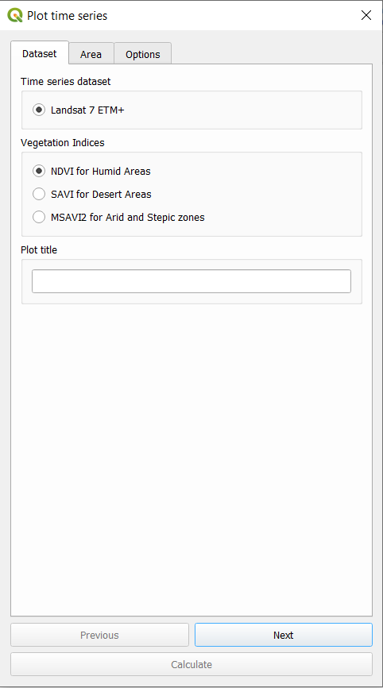
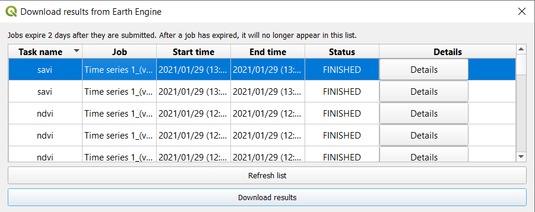
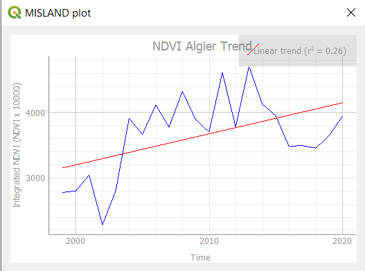

Calculate Vegetation Degradation#
Compute Vegatation Indices#
Land degradation hotspots (LDH) are produced via the analysis of time-series vegetation indices data and are used to characterize areas of different sizes, where the vegetation cover and the soil types are severely degraded. Vegetation loss/gain hotspots will be calculated based on time series observation of selected suit of vegetation indices depending on the climatic zones and terrain morphology of the North African countries
Vegation Indices computed from Landsat 7 ETM+ include:
NDVI (humid, sub-humid and semi-arid zones)
DVI is preferable for global vegetation monitoring since it helps to compensate for changes in lighting conditions, surface slope, exposure, and other external factors. NDVI is calculated in accordance with the formula:
NIR – reflection in the near-infrared spectrum RED – reflection in the red range of the spectrum
According to this formula, the density of vegetation (NDVI) at a certain point of the image is equal to the difference in the intensities of reflected light in the red and infrared range divided by the sum of these intensities.
This index defines values from -1.0 to 1.0, basically representing greens, where negative values are mainly formed from clouds, water and snow, and values close to zero are primarily formed from rocks and bare soil. Very small values (0.1 or less) of the NDVI function correspond to empty areas of rocks, sand or snow. Moderate values (from 0.2 to 0.3) represent shrubs and meadows, while large values (from 0.6 to 0.8) indicate temperate and tropical forests.
MSAVI2 (arid and stepic zones)
MSAVI2 is soil adjusted vegetation indices that seek to address some of the limitation of NDVI when applied to areas with a high degree of exposed soil surface.It eliminates the need to find the soil line from a feature-space plot or even explicitly specify the soil brightness correction factor:
SAVI (desert areas)
SAVI is used to correct Normalized Difference Vegetation Index (NDVI) for the influence of soil brightness in areas where vegetative cover is low. Landsat Surface Reflectance-derived SAVI is calculated as a ratio between the R and NIR values with a soil brightness correction factor (L) defined as 0.5 to accommodate most land cover types.

To compute the above vegetation indices, click on the calculator icon . This will open up the “Calculate Indicators” dialog box.

Select the “Vegetation Indices Time-Series” to open the window for this analysis.

From the list of vegetation indices provided select your desired index and provide a title to your plot. Select the area of interest i.e point or polygon, label your task and calculate the index.
To view your final plot go to “Download results from Earth Engine” and refresh the list, then select the task and download the results. This will plot a graph of your index over time.
 